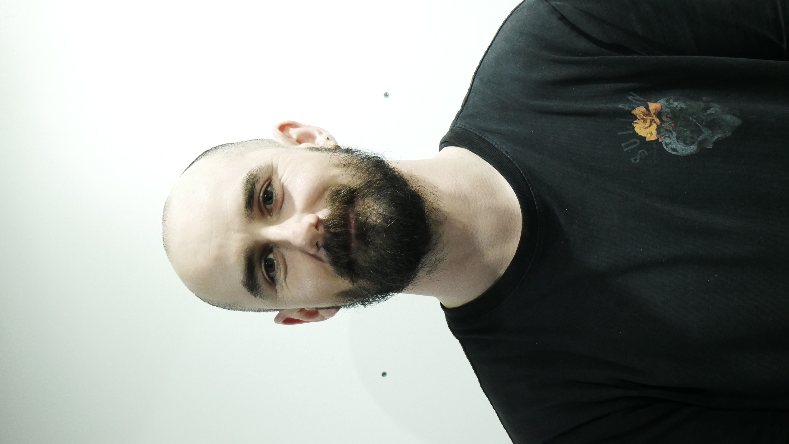

Un tatouage naît d'un projet, pas d'un catalogue.
Brenn dessine chaque pièce avec toi, de la première idée à la séance.

L'artiste
Brendan Le Damany s’est développé dans le milieu du tatouage avec l’idée que chaque tatouage doit être unique, impactant et refléter la personnalité de ses client(e)s.
Sa façon de travailler
C’est avant tout une rencontre, un échange et des émotions
transposées au motif pour traverser le temps avec vous. Une
approche douce, dans la bienveillance et la compassion.
Si l’on doit résumer l’approche artistique ce serait profondeur et
lumières, créer une oeuvre qui respecte le dynamisme et la
morphologie de la partie du corps à tatouer - tout en restant
simple mais impactant dans la composition.
Brenn exerce depuis plus de 10 ans et saura vous guider pour tirer
le meilleur du potentiel créatif de votre projet.
Questions fréquentes
Comment se passe la première prise de contact ?
[Réponse à rédiger avec Brenn, dans ses propres mots.]
Combien de temps faut-il attendre pour un rendez-vous ?
[Réponse à rédiger avec Brenn.]
Puis-je venir avec mes propres idées ou références ?
[Réponse à rédiger avec Brenn.]
Comment prendre soin de mon tatouage ?
[Réponse à rédiger avec Brenn.]